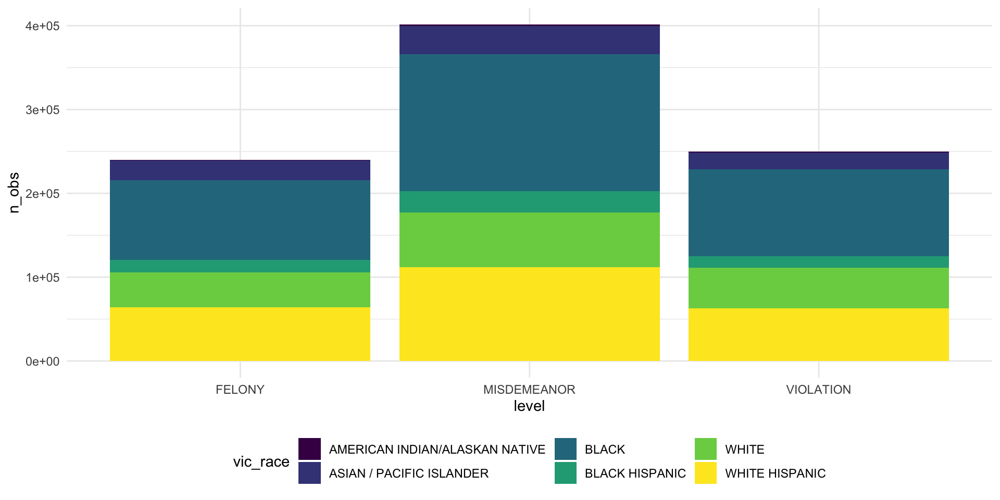
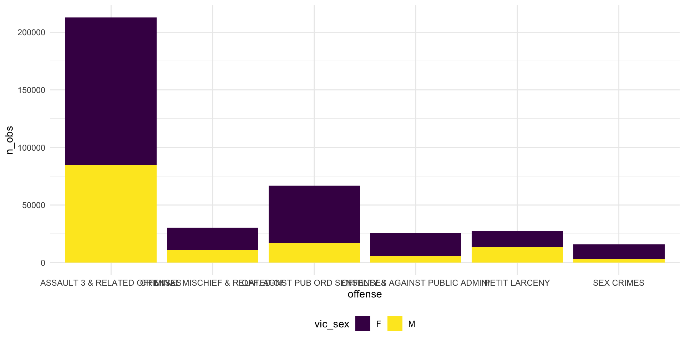

Our dataset does not contain data for October, November and December of the year 2022. We are interested in the following main felonies: Burglary, Felony Assault, Grand Larceny, Grand Larceny of Motor Vehicle, Murder and Non-negligent Manslaughter, Rape, and Robbery.
dangrous_data = dangrous_data%>%
mutate(
level_lm= case_when(
level == 'VIOLATION' ~ 0,
level == "MISDEMEANOR" ~ 1,
level == "FELONY" ~ 2
)
)
dnd=dangrous_data %>%
group_by(level,vic_race) %>%
dplyr::summarize(
n_obs=n(),
type=level
) %>%
unique() %>%
ggplot(
aes(x=level,y=n_obs,fill=vic_race)
)+
geom_bar(stat="identity")
plot_his_race=dangrous_data %>%
group_by(level,vic_race) %>%
dplyr::summarize(
n_obs=n(),
type=level_lm
) %>%
unique() %>%
ggplot(
aes(x=level,y=n_obs,fill=vic_race)
)+
geom_bar(stat="identity")
plot_his_race
plot_pie_race0=dangrous_data %>%
group_by(level,vic_race) %>%
dplyr::summarize(
n_obs=n(),
type=level_lm
) %>%
unique() %>%
filter(type==0)
plot_pie_race0=plot_ly(plot_pie_race0,labels =~ vic_race,values= ~n_obs) %>%
add_pie %>%
layout(title="VIOLATION for vic_race")
plot_pie_race1=dangrous_data %>%
group_by(level,vic_race) %>%
dplyr::summarize(
n_obs=n(),
type=level_lm
) %>%
unique() %>%
filter(type==1)
plot_pie_race1=plot_ly(plot_pie_race1,labels =~ vic_race,values= ~n_obs) %>%
add_pie %>%
layout(title="MISDEMEANOR for vic_race")
plot_pie_race2=dangrous_data %>%
group_by(level,vic_race) %>%
dplyr::summarize(
n_obs=n(),
type=level_lm
) %>%
unique() %>%
filter(type==2)
plot_pie_race2=plot_ly(plot_pie_race2,labels =~ vic_race,values= ~n_obs) %>%
add_pie %>%
layout(title="FELONY for vic_age")
plot_pie_race0plot_pie_race1plot_pie_race2dangrous_data_3 = dangrous_data%>%
mutate(
level_lm= case_when(
level == 'VIOLATION' ~ 0,
level == "MISDEMEANOR" ~ 0,
level == "FELONY" ~ 1
)
) %>%
filter(!vic_age_group=="18-24")
model_visex <- glm(level_lm ~ vic_race, data = dangrous_data_3)
summary(model_visex)##
## Call:
## glm(formula = level_lm ~ vic_race, data = dangrous_data_3)
##
## Deviance Residuals:
## Min 1Q Median 3Q Max
## -0.3693 -0.3086 -0.2856 0.6516 0.7187
##
## Coefficients:
## Estimate Std. Error t value Pr(>|t|)
## (Intercept) 0.281284 0.004217 66.702 < 2e-16 ***
## vic_raceASIAN / PACIFIC ISLANDER 0.088009 0.004345 20.255 < 2e-16 ***
## vic_raceBLACK 0.004360 0.004255 1.025 0.305
## vic_raceBLACK HISPANIC 0.027315 0.004456 6.130 8.81e-10 ***
## vic_raceWHITE 0.067113 0.004276 15.697 < 2e-16 ***
## vic_raceWHITE HISPANIC 0.025907 0.004273 6.063 1.33e-09 ***
## ---
## Signif. codes: 0 '***' 0.001 '**' 0.01 '*' 0.05 '.' 0.1 ' ' 1
##
## (Dispersion parameter for gaussian family taken to be 0.2150154)
##
## Null deviance: 403856 on 1870434 degrees of freedom
## Residual deviance: 402171 on 1870429 degrees of freedom
## AIC: 2433129
##
## Number of Fisher Scoring iterations: 2dangerous=dangrous_data%>%
mutate(
level_lm= case_when(
level == 'VIOLATION' ~ 0,
level == "MISDEMEANOR" ~ 0,
level == "FELONY" ~ 1
) )%>%
mutate(
level_lm=ordered(level_lm, labels = c('1', '0'))
)
model_toal<- glm(level_lm ~ vic_race + vic_age_group + vic_sex,family = binomial,data=dangerous)
summary(model_toal)##
## Call:
## glm(formula = level_lm ~ vic_race + vic_age_group + vic_sex,
## family = binomial, data = dangerous)
##
## Deviance Residuals:
## Min 1Q Median 3Q Max
## -1.1743 -0.8920 -0.8069 1.4088 1.7489
##
## Coefficients:
## Estimate Std. Error z value Pr(>|z|)
## (Intercept) -1.285175 0.019951 -64.416 < 2e-16 ***
## vic_raceASIAN / PACIFIC ISLANDER 0.406474 0.019215 21.154 < 2e-16 ***
## vic_raceBLACK 0.090817 0.018896 4.806 1.54e-06 ***
## vic_raceBLACK HISPANIC 0.173991 0.019718 8.824 < 2e-16 ***
## vic_raceWHITE 0.318597 0.018967 16.797 < 2e-16 ***
## vic_raceWHITE HISPANIC 0.169170 0.018958 8.923 < 2e-16 ***
## vic_age_group18-24 0.269861 0.007765 34.753 < 2e-16 ***
## vic_age_group25-44 0.161043 0.006969 23.107 < 2e-16 ***
## vic_age_group45-64 0.064622 0.007267 8.893 < 2e-16 ***
## vic_age_group65+ 0.554430 0.008764 63.260 < 2e-16 ***
## vic_sexM 0.317009 0.002978 106.452 < 2e-16 ***
## ---
## Signif. codes: 0 '***' 0.001 '**' 0.01 '*' 0.05 '.' 0.1 ' ' 1
##
## (Dispersion parameter for binomial family taken to be 1)
##
## Null deviance: 2688603 on 2150241 degrees of freedom
## Residual deviance: 2662120 on 2150231 degrees of freedom
## AIC: 2662142
##
## Number of Fisher Scoring iterations: 4dangerous=dangerous%>%
filter(!vic_age_group=="18-24")
model_toal<- glm(level_lm ~ vic_race + vic_age_group + vic_sex,family = binomial,data=dangerous)
summary(model_toal)##
## Call:
## glm(formula = level_lm ~ vic_race + vic_age_group + vic_sex,
## family = binomial, data = dangerous)
##
## Deviance Residuals:
## Min 1Q Median 3Q Max
## -1.1727 -0.8856 -0.7812 1.4145 1.7513
##
## Coefficients:
## Estimate Std. Error z value Pr(>|z|)
## (Intercept) -1.290558 0.021449 -60.167 < 2e-16 ***
## vic_raceASIAN / PACIFIC ISLANDER 0.426588 0.020826 20.483 < 2e-16 ***
## vic_raceBLACK 0.098816 0.020486 4.824 1.41e-06 ***
## vic_raceBLACK HISPANIC 0.190652 0.021391 8.913 < 2e-16 ***
## vic_raceWHITE 0.331657 0.020551 16.138 < 2e-16 ***
## vic_raceWHITE HISPANIC 0.192576 0.020557 9.368 < 2e-16 ***
## vic_age_group25-44 0.161209 0.006969 23.131 < 2e-16 ***
## vic_age_group45-64 0.066802 0.007269 9.190 < 2e-16 ***
## vic_age_group65+ 0.556062 0.008770 63.405 < 2e-16 ***
## vic_sexM 0.296801 0.003194 92.919 < 2e-16 ***
## ---
## Signif. codes: 0 '***' 0.001 '**' 0.01 '*' 0.05 '.' 0.1 ' ' 1
##
## (Dispersion parameter for binomial family taken to be 1)
##
## Null deviance: 2331828 on 1870434 degrees of freedom
## Residual deviance: 2309294 on 1870425 degrees of freedom
## AIC: 2309314
##
## Number of Fisher Scoring iterations: 4pie_chart=dangrous_data %>%
filter(level=="MISDEMEANOR")
pie_chart =pie_chart%>%
group_by(offense) %>%
dplyr::summarize(n=n()) %>%
mutate(
offense=as.character(offense)
)
pie_chart= rbind(pie_chart,c("others",290))
pie_chart=pie_chart %>%
mutate(
n=as.numeric(n)
) %>%
filter(n>100)
# mid victem event as offense details
plot_ly(pie_chart,labels =~ offense,values= ~n) %>%
add_pie %>%
layout(title="just for try")##look difference among most common event
offense_data= dangrous_data %>%
filter(offense=="ASSAULT 3 & RELATED OFFENSES"|
offense=="OFF. AGNST PUB ORD SENSBLTY &"|
offense=="CRIMINAL MISCHIEF & RELATED OF"|
offense== "PETIT LARCENY"|offense=="OFFENSES AGAINST PUBLIC ADMINI" |
offense== "SEX CRIMES") %>%
filter(level=="MISDEMEANOR")
dnd=offense_data %>%
group_by(offense,vic_sex) %>%
dplyr::summarize(
n_obs=n(),
type=level
) %>%
unique() %>%
ggplot(
aes(x=offense,y=n_obs,fill=vic_sex)
)+
geom_bar(stat="identity")
dnd